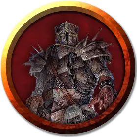

Связанный страж гробницы
Spiked Tomb Guardian
Средний Конструкт, нейтральный

Класс Доспеха 17 (латы)
Хиты 93 (11к8 + 44)
Скорость 30 футов
| мод | спас | ||
|---|---|---|---|
| СИЛ | 19 | +4 | +4 |
| ЛОВ | 9 | −1 | −1 |
| ТЕЛ | 18 | +4 | +4 |
| мод | спас | ||
|---|---|---|---|
| ИНТ | 6 | −2 | −2 |
| МДР | 10 | +0 | +0 |
| ХАР | 5 | −3 | −3 |
Иммунитет к урону электричество, яд; дробящий, колющий, рубящий от немагических атак, кроме нанесённых адамантиновым оружием
Иммунитет к состояниям паралич, очарование, отравление, окаменение, истощение, испуг
Чувства тёмное зрение 60 футов, пассивное Восприятие 10
Языки понимает языки своего создателя, но не говорит
Опасность 6 (2300 опыта)
Бонус мастерства +3
Особенности
Шипованная цепь. Волшебная шипованная цепь, которая связывает стражей вместе, не позволяет им двигаться более чем на 15 футов друг от друга. Кроме того, до тех пор, пока цепь не повреждена, повреждение, нанесённое одному из стражей, равномерно распределяется между ними.
Шипованная цепь может быть атакована отдельно и имеет КД 18, порог урона 10, 5 хитов и иммунитет к урону ядом и психической энергией. Если цепь разрывается, оба стража гробницы мгновенно становятся берсерками.
Берсерк. Каждый раз, когда страж гробницы начинает ход с 40 или меньше хитами, бросайте к6. Если выпадет «6», страж гробницы становится берсерком. Будучи берсерком, он в каждом своем ходу атакует ближайшее видимое существо. Если поблизости нет существ, к которым можно подойти и атаковать, страж гробницы атакует предмет, предпочитая предметы с размером меньше своего. Став берсерком, страж гробницы остается им, пока его не уничтожат или пока он не восстановит все свои хиты.
Создатель голема, находящийся в пределах 60 футов от ставшего берсерком стража гробницы, может попытаться успокоить его, отдавая четкие команды убедительным голосом. Страж гробницы должен слышать создателя, который действием совершает проверку Харизмы (Убеждение) Сл 15. При успехе страж гробницы перестает быть берсерком. Если страж гробницы получает урон, когда у него 40 или меньше хитов, он может снова стать берсерком.
Боязнь огня. Если страж гробницы получает урон огнём, он до конца своего следующего хода совершает с помехой броски атаки и проверки характеристик.
Неизменяемая форма. Страж гробницы обладает иммунитетом ко всем заклинаниям и эффектам, изменяющим его форму.
Поглощение электричества. Каждый раз, когда страж гробницы должен получить урон электричеством, он не получает урон, и вместо этого восстанавливает число хитов, равное причиняемому урону электричеством.
Сопротивление магии. Страж гробницы совершает с преимуществом спасброски от заклинаний и прочих магических эффектов.
Магическое оружие. Атаки оружием стража гробницы являются магическими.
Действия
Мультиатака. Голем совершает две атаки шипастой перчаткой.
Шипастая перчатка. Рукопашная атака оружием: +7 к попаданию, досягаемость 5 футов, одна цель. Попадание: 13 (2к8 + 4) дробящего урона и 7 (2к6) колющего урона.
Описание
Две несуразных фигуры, лицом друг к другу, стоят в нишах вдоль этого длинного коридора. Броня вживлена в их плоть, их лица скрыты шлемами, а руки – шипастыми перчатками. Их шеи закованы в железные ошейники, которые в свою очередь соединены с шипованной цепью, тянущейся по коридору.